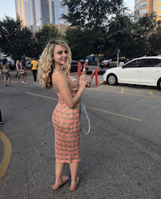

About Me
Hi, I'm Juliet.

Welcome to my first website! I am a student and musician in Austin, Texas.
I am an avid reader and I have never met a dog I didn't like. I can be found at Barton Springs soaking up the sun or hiking the Greenbelt with my dog, Arrow. I've been in Austin about four years and I love living somewhere with so much natural wonder hidden right in the middle of the city.